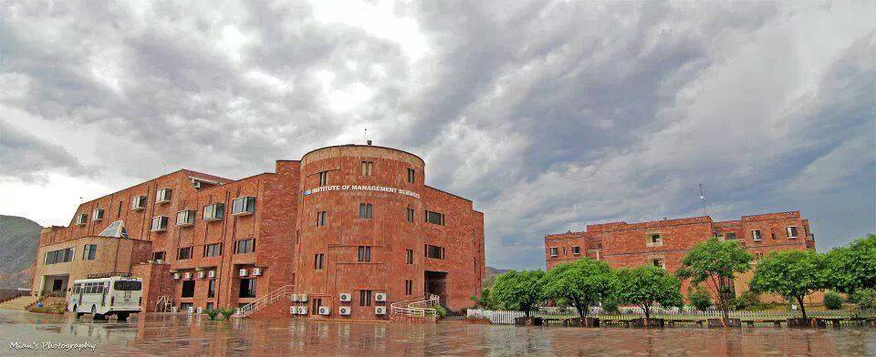

Welcome to Imsciences Library Management System

Introduction
The Institute of Management Sciences (IMSciences) Library came into being with the inception of IMSciences in 1995. From 1995 to December 31st 2001, the library remained inside the premises of the University of Peshawar. In January 2002, however, IMSciences moved to Hayatabad Peshawar where initially the library comprised of two small rooms. In August 2007, however, the library shifted to phase 7, where again a temporary but wide hall was allotted to the Library. In September 2010 the library finally shifted to its own new building on 5th floor of the Academic Block.
Vision
Our vision is to become the intellectual center of the Institute by fully integrating its services, state-of-the-art technologies, and unique collections into all aspects of our institution.
Mission
The IMSciences Library aims to:
facilitate library users’ access to information resources
provide latest information through updated edition of books and periodicals
provide excellent readers’ advisory services, provide modern library services including printing, scanning, photocopying and online public access cataloguing (OPAC)
serve as a center for learning by providing a place for students and faculty to actively engage in study and research;
use technology to extend access to library resources and services; and assist and instruct students and faculty in finding and using scholarly information available at the institute and elsewhere.